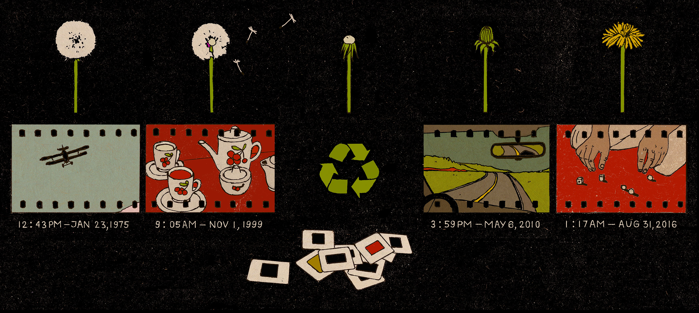

大脑一开始并不知道什么重要，于是尽可能多地记录。白天最平凡的事，晚上也可能历历在目。
随后，遗忘开始工作：删掉噪音，留下对生存、关系与身份真正有用的信息。
大脑先广泛编码，不急着判断重要性。
遗忘筛掉重复、无关、不再需要的信息。
被判定为重要的记忆，通过巩固留下来。
遗忘被视为被动过程：记忆痕迹随时间自然消退，或者变得难以提取。
新的研究表明，大脑会主动清除记忆。遗忘，是一种持续运行的功能。
果蝇实验发现，多巴胺在记忆形成后立即启动“内在遗忘”，主动削弱刚形成的记忆痕迹。
抑制 Rac1，可让小鼠的记忆保持从不足 72 小时延长到至少 120 小时；增强它，记忆寿命会缩短到 24 小时以内。
海马体中新生的神经元会整合进现有网络，可能让旧记忆变得不稳定，甚至被覆盖。
睡眠、间隔与重复，会帮助大脑稳定刚形成的记忆痕迹。不是熬得更久，而是让大脑有时间整理。
合上书，试着复述。每一次成功提取，都会让这条记忆路径更粗、更容易再次被调用。
把新信息和已有的经验、目标、情绪连起来。大脑更可能保留那些“与自己有关”的内容。